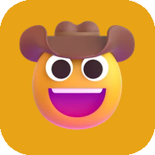

Chromatic Media
Free games and programs, made for the people we love. No ads, no accounts, nothing collected.
Perry's Parlor
Spider Solitaire in an Old West saloon. Large print, gentle, and impossible to break.

Talanoa
A tap-to-speak talking board for people who don't use words, and the folks who care for them.
MiniPad
A little space for your words: a notepad with a live formatted preview as you type.
GCB Computers
A Diner Dash-style game about the crew at GCB Computers in Layton, Utah. Plays in your web browser.
Chromatic Media is one person making free programs in spare hours. Many are for people with special needs and the people who look after them.